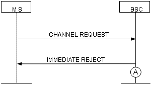

Measurement Counters
| ID | Counter | Description |
|---|---|---|
| 1279175432 | UP.EGPRS.TBF.ESTB.FAIL.OTHER.CAUSE | A9216:Number of Failed Uplink EGPRS TBF Establishments due to Other Cause |
Description
This counter provides the number of failed uplink EGPRS TBF establishments due to other causes in a measurement period. If the value of this counter is large, resource allocation is abnormal or fails or flow control is triggered in the cell.
Measurement point
The uplink EGPRS TBF establishment failures due to other causes involve the following aspects:
Failed uplink EGPRS TBF establishment using one phase access due to other causes
When receiving the CHANNEL REQUEST message, the BSC sends an IMMEDIATE ASSIGNMENT REJECT message on the CCCH to reject the access request from the MS if the uplink EGPRS TBF cannot be established due to failed uplink resource allocation, abnormal internal state, or abnormal internal messages. If the uplink EGPRS TBF cannot be established because the BSC detects overload protection on the board, the BSC does not send the channel assignment message. Figure 1 shows the procedure in which the BSC rejects the channel request from the MS. Each time the BSC sends an IMMEDIATE ASSIGNMENT REJECT message (see measurement point A), the counter is incremented by one.

Failed uplink EGPRS TBF establishment using single block access due to other causes
During the single block access procedure or when the MS requests the change of radio resource configuration, the BSC receives the PACKET RESOURCE REQUEST message from the MS. This message requests the establishment or re-establishment of the uplink EGPRS TBF. If the uplink EGPRS TBF establishment fails due to failed uplink resource allocation, abnormal internal state, or abnormal internal messages, the BSC sends a PACKET ACCESS REJECT message on the PACCH to reject the access request from the MS. Figure 2 shows the procedure in which the BSC rejects the uplink resource request from the MS. Each time the BSC sends a PACKET ACCESS REJECT message (see measurement point A), the counter is incremented by one.

Failed uplink EGPRS TBF establishment on the PACCH due to other causes
When receiving the CHANNEL REQUEST information element in the EGPRS PACKET DOWNLINK ACK/NACK message from the MS, the BSC sends a PACKET ACCESS REJECT message on the PACCH to reject the access request from the MS if the uplink EGPRS TBF cannot be established due to failed uplink resource allocation, abnormal internal state, or abnormal internal messages. Figure 3 shows the procedure in which the BSC rejects the uplink packet channel request form the MS. Each time the BSC sends a PACKET ACCESS REJECT message (see measurement point A), the counter is incremented by one.

Formula
None
Unit
None
Related Features
| Counter | Feature ID | Feature Name |
|---|---|---|
| UP.EGPRS.TBF.ESTB.FAIL.OTHER.CAUSE |
GBFD-114201 |
EGPRS |